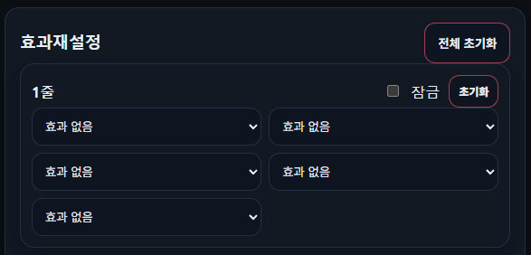
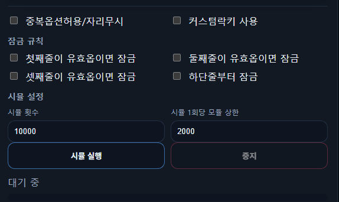
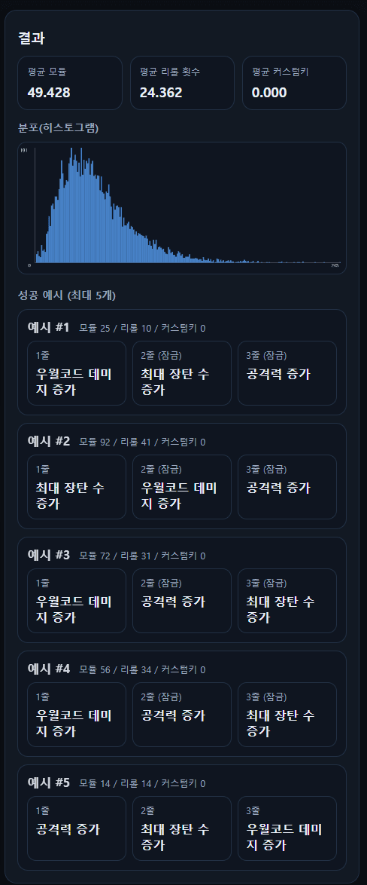

기존에 pc에 설치하거나 안드로이드 모바일에 설치하던 프로그램을 하나 개발했었는데
이게 신뢰하지못하는 프로그램으로 인식되거나 호환이 안되는 경우가 있고
맥유저나 아이폰은 전혀 사용을 못한다는 한계가 있었는데

그래서 접근성 향상을 위해 웹버전으로 리뉴얼 해왔음
오버 시뮬이 뭔데?
= 나 대신 1만명의 니붕이가 대신 옵작을해주고 모듈을 얼만큼 썻는지 알려줌
효과 재설정과 수치 재설정 시뮬을 별도로 제공하고
효과 재설정은 각 줄당 5개 옵션까지 선택가능함

예로들어 난 1줄에 크확 크뎀 장탄중에 하나만 붙으면 뭘 붙던지 상관 안해!
이런경우 3개 다 넣어버리면됨

줄별로 원하는 옵션을 선택했으면 이제 시뮬 규칙을 정할수있는데
원하는 규칙을 선택하고 시뮬 실행을하면 됨

시뮬이 끝나면 평균 모듈 / 평균 리롤 횟수 / 평균 커스텀키가 상단에 계산되고
아래에 시뮬레이션이 [성공]했다고 판단한 예시를 5개 보여줌
사진은 우장공 + 하단줄부터 잠금 규칙으로 돌린건데
예시 #5번은 14번째 리롤에서 우장공이 한번에 튀어나와서 바로 성공한 케이스임
이 예시를 보고 본인이 의도한 대로 시뮬이 실행되었는지 가늠할수 있음
ex) 난 3줄에 우코를 찾고있는데 시뮬은 3줄에 명중을 박아버리네?
-> 옵션 세팅을 잘못했구나
ex) 난 3줄만 잠그려고했는데 시뮬은 1줄을 잠궈버리네?
-> 잠금 규칙을 잘못했구나
니케 오버로드 시뮬레이터
여튼 만관부 사실 내가쓰려고 만든거삼
아무도 안써도 나혼자 잘 쓸꺼긴함